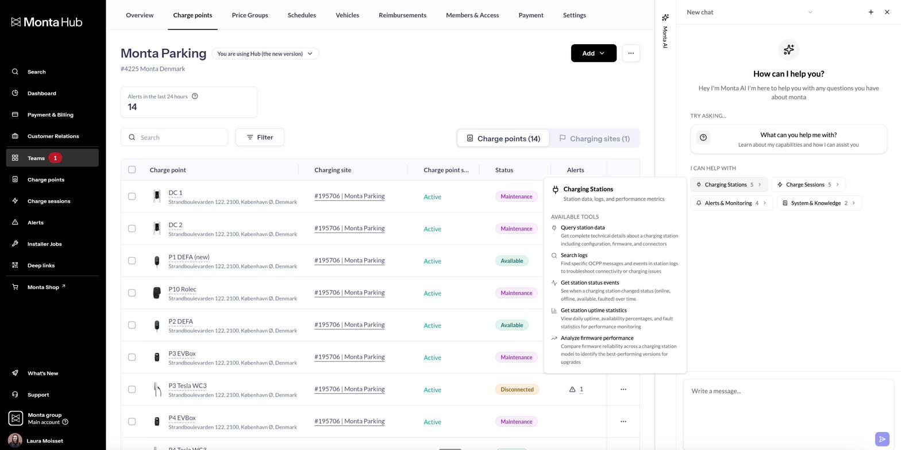
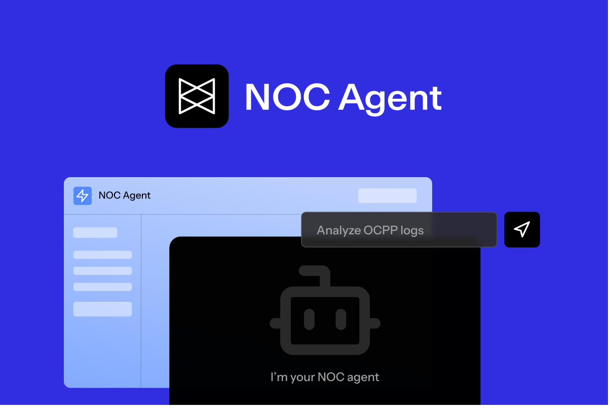
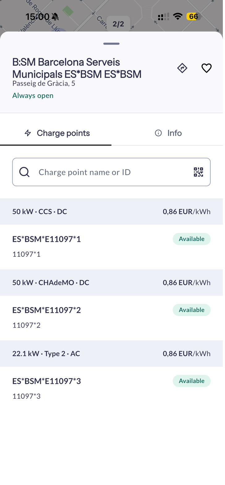
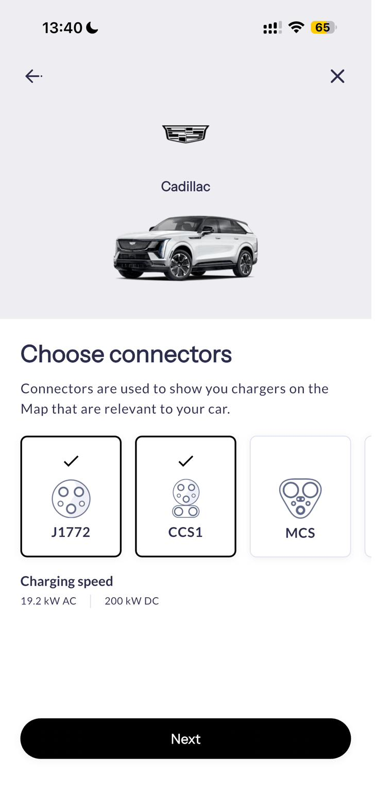
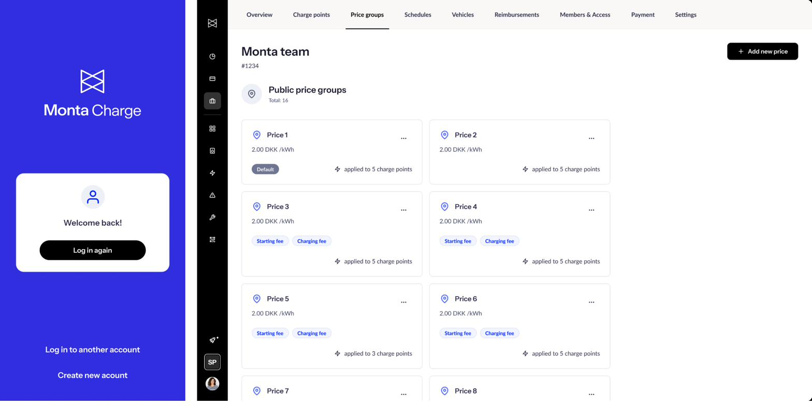

Monta · VP Product Experience · Dec 2024–Present
Formalizing UX at Europe's
leading EV infrastructure platform
First UX leader at Monta — built the function from zero and drove 20% MoM MAU growth through systematic experimentation and PLG redesign.
The situation
Monta had grown rapidly — and successfully — without a dedicated UX function. By the time I joined, the product had real traction across EV charging networks, charge point operators, and end consumers. But there was no UX vision, no design career framework, and no experimentation infrastructure tied to business outcomes.
I was hired as the company's first UX leader. That meant building everything from scratch: vision, process, team structure, shared design language, and the organizational muscle to make design a strategic input — not a production service.
What we built
I started by establishing what UX would stand for at Monta — not aesthetics, but outcomes. I connected the design function directly to quarterly business reviews, making research insights a standing agenda item rather than a deck shared after decisions were already made.
Leading a team of 20+ across design, research, and content, I delegated ownership broadly while staying close enough to the hardest problems to lead by example. I personally owned the PostHog implementation — architecting the event taxonomy and A/B testing framework that the team now runs experiments against. That infrastructure drove a 20% month-over-month lift in monthly active users through systematic experimentation and a comprehensive PLG onboarding redesign.

The strategic initiatives
On the product side, we led UX for Monta's most critical bets: Monta AI (AI-assisted charge point management embedded directly in the operator Hub), the Customer Council program to systematize user feedback at scale, the NOC operations agent for network operators, and the Mobile 2.0 consumer app redesign.




What I learned
Coming in as the first UX leader at a fast-growing company requires a different approach than inheriting an established function. The first job isn't to redesign things — it's to earn trust, understand what's already working, and make the case for design maturity in the language of business outcomes. At Monta, that meant owning the PostHog implementation myself before delegating it, so I understood exactly what we were measuring and why.